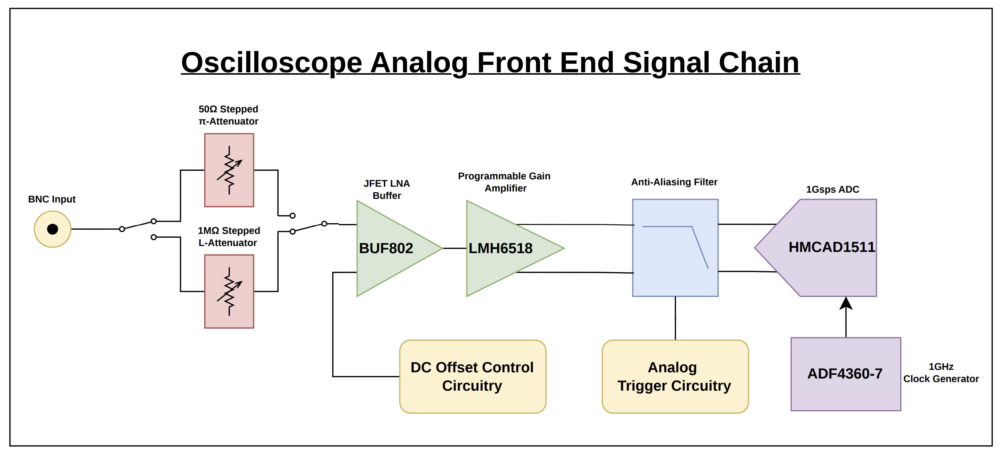
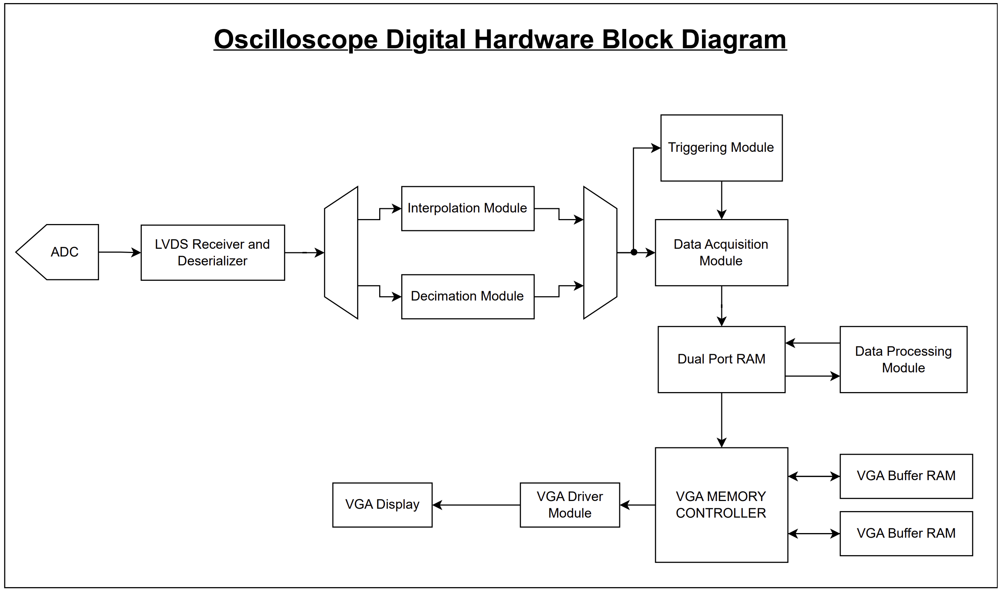
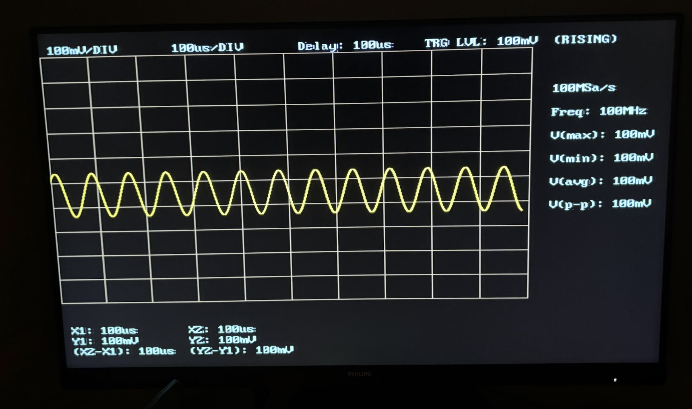

System Architecture


Source Files:
Project Overview
I designed a custom digital storage oscilloscope from the analog front end through the FPGA-based digital signal-processing pipeline. The design incorporates high-speed analog circuitry, controlled-impedance PCB layout, ADC interfacing, FPGA development, and digital signal processing.
To reduce the risk of a design failure and avoid the cost of fabricating an entirely new system after a failed revision, the design was partitioned into six separate prototype boards, with each board implementing a major section of the overall system. The boards have been fabricated and are intended to be tested and characterized individually before integrating the complete system.
ADC Module
- 1 Gsps sample rate
- 4 channels
- LVDS serial output
- FMC connector

Open Schematic PDF
ADC Clock Module
- 1 GHz differential clock

Open Schematic PDF
Attenuator Module
- 1 MΩ or 50 Ω input impedance
- Variable input attenuation
- AC/DC coupling
- Input protection

Open Schematic PDF
Buffer Module
- 50 Ω output impedance
- Variable DC-offset control
- Output voltage clamping

Open Schematic PDF
Programmable Gain Amplifier Module
- Single-ended to differential conversion
- Common-mode level shifting
- Programmable gain
- Anti-aliasing filter

Open Schematic PDF
Firmware Demo
